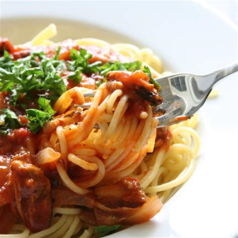
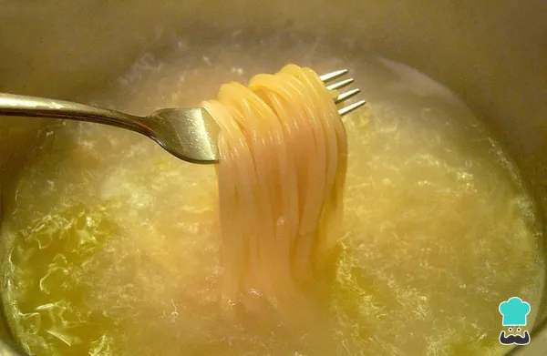
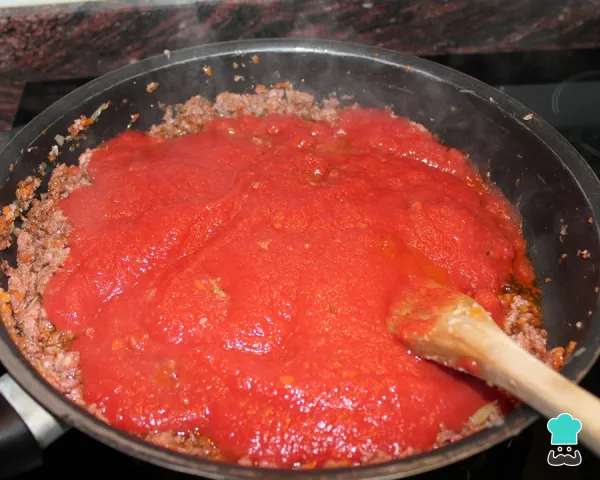
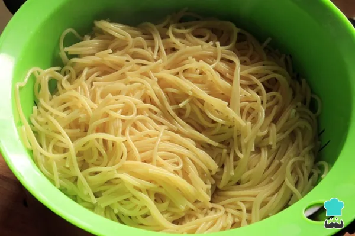
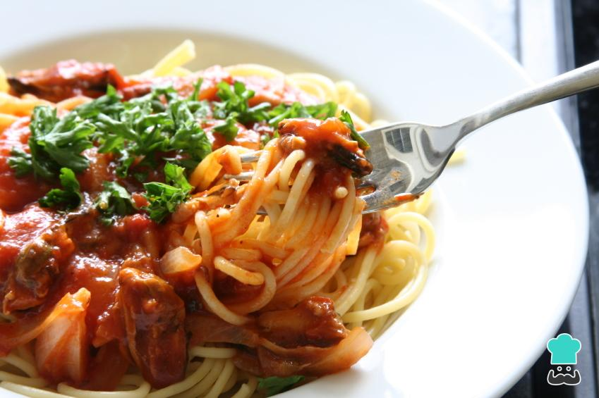

Receta de fideos con salsa
Ingredientes:
- fideos
- cebollas
- tomates
- carne o salchichas
- queso para rallar
Instrucciones
Cómo preparar los fideos con salsa
- Para empezar con la preparación de los fideos con tomate, coge una olla y pon el agua a hervir. Cuando alcance el punto de ebullición, incorpora la pasta y una cucharadita de sal. Cocínala hasta que esté al dente y revuélvela con frecuencia con una cuchara de madera. 
- Mientras se cuecen los fideos, corta las salchichas en círculos finos y la cebolla a rodajas. Ahora coge una sartén y fríe los dos ingredientes juntos. Cuando estén hechos, baja el fuego y añade la salsa de tomate y el orégano al gusto. Deja que se cocine el sofrito moviéndolo de vez en cuando durante unos minutos, luego retíralo del fuego. 
- Mientras se hace el sofrito de los fideos, añade las alverjas a la pasta. Cuando estén cocidos los fideos escúrrelos junto con las alverjas y pásales un poco de agua fría. 
- Ahora que ya tienes todos los ingredientes cocinados, ya puedes servir los platos. Para ello, coloca los fideos y sobre ellos un poco de salsa de tomate con cebolla y salchicha. Como ves, se trata de una receta de pasta con tomate muy sencilla, rápida y que gustará a todos. Si lo deseas, puedes acompañar este rico plato con una ensalada fresca. 